Aula 10 - Monopólio
01 - Quando uma firma tem poder de mercado
02 - Barreiras à entrada e controle de recursos
03 - Monopólios criados pelo governo
04 - Monopólio natural e economias de escala
05 - A demanda da firma monopolista
06 - Receita total, média e marginal
07 - Efeito quantidade e efeito preço
08 - As curvas de demanda e receita marginal
09 - Como o monopolista maximiza o lucro
10 - Um exemplo completo de preço e produção
11 - Lucro, custo médio e possibilidade de prejuízo
12 - Por que o monopólio não tem curva de oferta
13 - Medicamentos patenteados e entrada de genéricos
14 - Elasticidade e poder de fixar preços
15 - A quantidade socialmente eficiente
16 - O peso morto do monopólio
17 - O lucro do monopólio é uma perda social?
19 - O que permite discriminar preços
20 - Discriminação perfeita de preços
21 - Discriminação imperfeita e seus três graus
22 - Exemplos de discriminação no cotidiano
23 - Mensalidade anunciada e preço efetivamente pago
24 - Quatro respostas de política pública
25 - Concorrência, fusões e políticas antitruste
26 - Regular pelo custo marginal
28 - Incentivos à redução de custos
30 - Quando não intervir pode ser uma escolha
🚰 Imagine uma cidade atendida por uma única rede de distribuição de água. Se a tarifa aumenta, as famílias podem economizar, mas encontrar outro fornecedor pode ser difícil.
Um monopólio é um mercado atendido por um único vendedor de um produto sem substitutos próximos. O monopolista tem poder de mercado, isto é, capacidade de influenciar o preço que cobra.
Isso não significa liberdade para escolher qualquer combinação de preço e quantidade. Os consumidores continuam reagindo ao preço, e os custos continuam limitando o lucro.
As perguntas desta aula são:
Base: Mankiw, Principles of Economics, 8ª edição, capítulo 15, “Monopoly”, páginas 318 a 346 do PDF fornecido, equivalentes às páginas impressas 289 a 317. Exemplos numéricos e gráficos identificados como didáticos foram elaborados para esta aula.
A causa fundamental do monopólio é a existência de barreiras à entrada. Alguma condição impede ou dificulta que concorrentes disputem o mercado.
O capítulo apresenta três origens principais:
| Origem | Como limita a entrada | Exemplo |
|---|---|---|
| Controle de um recurso essencial | Rivais não conseguem o insumo necessário | Único poço em uma localidade isolada |
| Exclusividade concedida pelo governo | A entrada ou a reprodução depende de autorização | Patentes e direitos autorais |
| Estrutura de custos | Uma firma atende o mercado a menor custo que várias | Rede de distribuição de água |
No primeiro caso, possuir um recurso escasso pode permitir cobrar acima do custo de fornecê-lo. A existência de substitutos e o comércio com outras regiões reduzem esse poder.
💎 Exemplo histórico do livro: o controle de parte da oferta de diamantes pela De Beers. A lição é sobre controle de recursos e restrição da oferta, não sobre a participação atual da empresa nesse mercado.
🔑 Ser uma empresa grande, isoladamente, não prova a existência de monopólio. É necessário definir o mercado e avaliar os substitutos disponíveis.
O governo pode conceder a uma pessoa ou empresa o direito exclusivo de produzir ou comercializar determinado bem.
Patentes protegem certas invenções. Direitos autorais protegem obras intelectuais. Nos exemplos do capítulo, essa proteção permite ao titular cobrar um preço superior ao que prevaleceria com reprodução livre.
Há um conflito entre dois objetivos:
| Benefício pretendido | Custo econômico possível |
|---|---|
| Incentivar pesquisa, criação e inovação | Preços mais altos durante a exclusividade |
| Permitir recuperar gastos de desenvolvimento | Menor acesso de consumidores ao produto |
💊 Desenvolver um medicamento pode exigir um investimento elevado, enquanto produzir uma unidade adicional pode custar relativamente pouco.
Sem alguma forma de remuneração, o incentivo para desenvolver o produto pode diminuir. Com exclusividade, porém, algumas compras socialmente vantajosas podem deixar de ocorrer.
🔑 A avaliação envolve incentivos à inovação ao longo do tempo e eficiência na utilização de um produto já desenvolvido.
Existe monopólio natural quando uma única firma consegue atender toda a demanda relevante a um custo menor que duas ou mais firmas.
O caso apresentado no capítulo envolve economias de escala ao longo da faixa de produção necessária para atender o mercado. Um custo fixo elevado é diluído por uma quantidade maior.
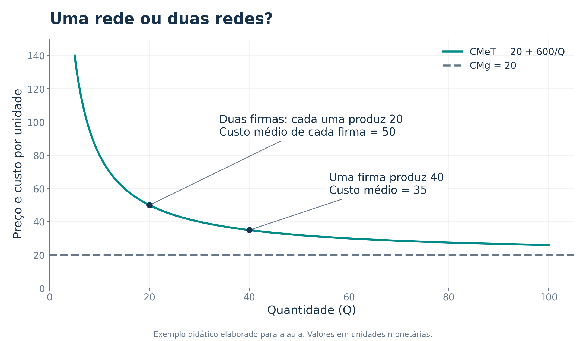
No exemplo, cada rede exige custo fixo de 600 e tem custo marginal de 20:
\[ CT=600+20Q,\qquad CMeT=\frac{600}{Q}+20. \]
Atender 40 unidades com uma firma custa 1.400. Dividir a produção entre duas redes custa 2.000, pois o custo fixo é duplicado.
🚰 Redes de água ilustram o problema. Uma ponte sem congestionamento também pode atender usuários adicionais com custo marginal muito baixo.
O tamanho do mercado importa: crescimento da demanda, congestionamento ou mudança tecnológica podem alterar a vantagem de concentrar a produção.
Em duplas, classifiquem os casos e expliquem o mecanismo econômico.
a) Uma empresa controla a única fonte local de um insumo sem substitutos próximos, e o transporte de outras regiões é inviável.
b) Um laboratório tem exclusividade temporária sobre uma invenção protegida por patente.
c) Construir uma segunda rede de água exige duplicar tubulações, mas atender mais casas pela rede existente custa pouco.
Pergunta adicional: toda empresa que cobra um preço alto é monopolista?
a) Controle de recurso essencial. b) Exclusividade legal. c) Monopólio natural, associado à estrutura de custos.
Preço alto, sozinho, não identifica monopólio: ele também pode refletir custos elevados, qualidade ou escassez temporária. É preciso analisar substitutos, concorrentes e barreiras à entrada.
Atividade autoral para discussão em sala.
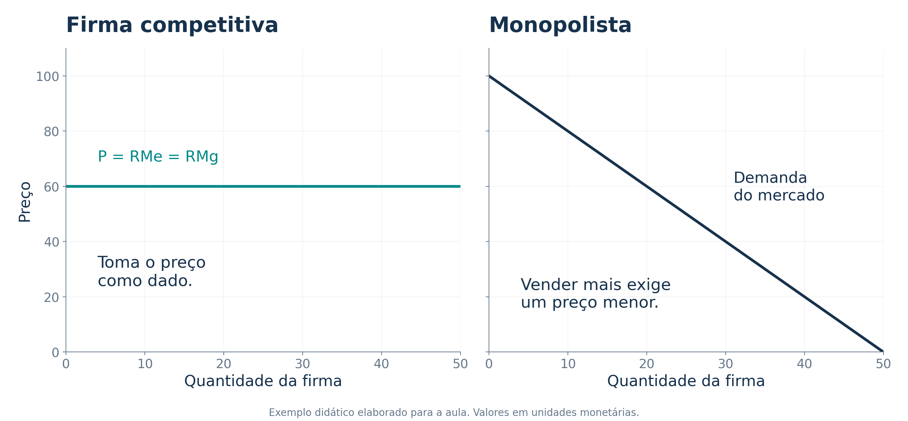
Uma firma perfeitamente competitiva é pequena em relação ao mercado e toma o preço como dado. A demanda que essa firma enfrenta é horizontal.
O monopolista atende sozinho o mercado e enfrenta a própria demanda de mercado, normalmente negativamente inclinada.
Para vender uma quantidade maior, precisa reduzir o preço. Se cobrar um preço maior, venderá menos.
🔑 A demanda limita as escolhas do monopolista. Ele escolhe um ponto da curva, não escolhe preço e quantidade de forma independente.
Hipótese de referência: até a discussão sobre discriminação, todas as unidades são vendidas pelo mesmo preço, sem externalidades ou outras distorções além do poder de mercado.
As definições são as mesmas da aula anterior:
\[ RT=P\times Q,\qquad RMe=\frac{RT}{Q}=P,\qquad RMg=\frac{\Delta RT}{\Delta Q}. \]
Considere a demanda didática \(P=100-2Q\):
| Quantidade | Preço = receita média | Receita total | Receita adicional da última unidade |
|---|---|---|---|
| 18 | 64 | 1.152 | 30 |
| 19 | 62 | 1.178 | 26 |
| 20 | 60 | 1.200 | 22 |
| 21 | 58 | 1.218 | 18 |
| 22 | 56 | 1.232 | 14 |
A última coluna compara cada quantidade com a imediatamente anterior. Por exemplo, de 20 para 21 unidades:
\[ \Delta RT=1.218-1.200=18. \]
A unidade adicional é vendida por 58, mas acrescenta apenas 18 à receita. Isso acontece porque o preço das 20 unidades anteriores também cai.
🔑 No monopólio com preço uniforme e demanda decrescente, a receita marginal é menor que o preço.
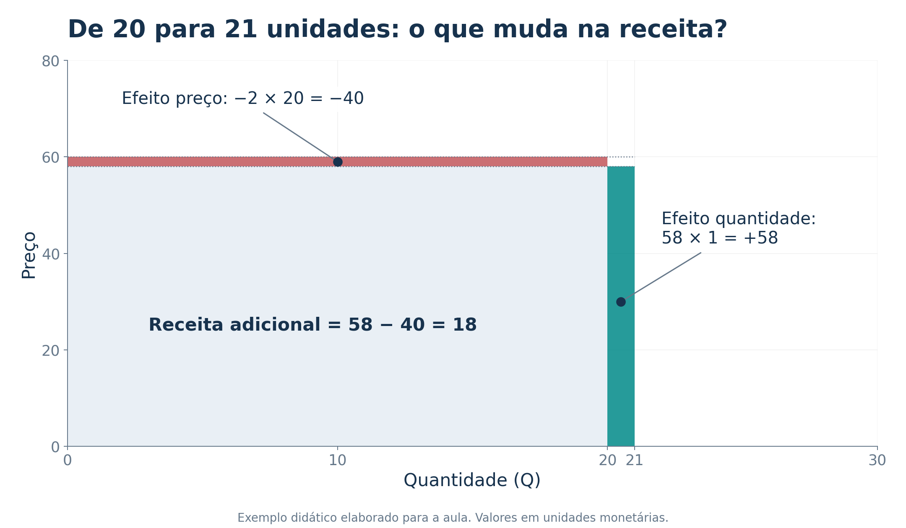
Quando o monopolista aumenta a produção, dois efeitos atuam sobre a receita:
No exemplo:
\[ \underbrace{\Delta RT}_{18} =\underbrace{58\times1}_{\text{efeito quantidade}} -\underbrace{2\times20}_{\text{efeito preço}}. \]
Para a firma competitiva, vender uma unidade adicional não reduz o preço de todas as demais unidades: por isso, \(RMg=P\).
Para o monopolista, a redução do preço pode ser tão importante que a receita total diminui, mesmo com aumento da quantidade vendida. Nesse caso, a receita marginal é negativa.
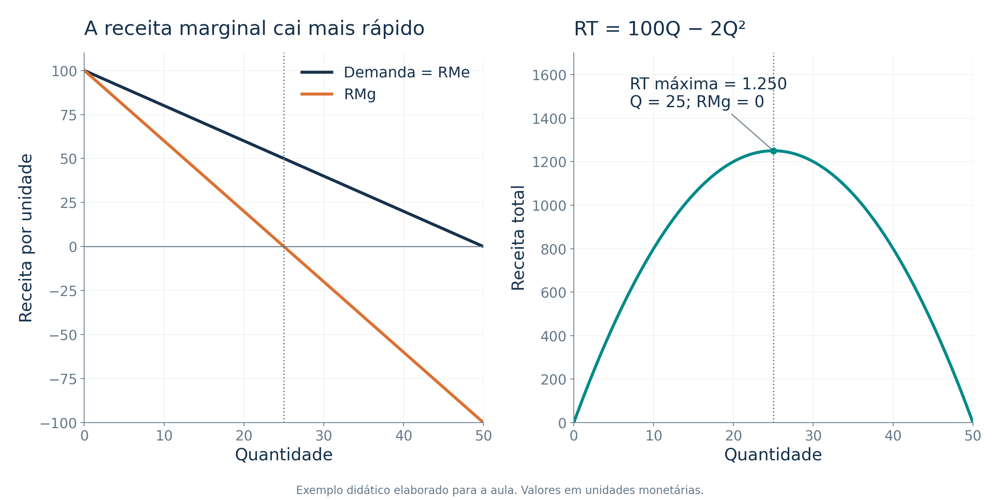
Tratando a quantidade como uma variável contínua:
\[ P=100-2Q\quad\Rightarrow\quad RT=100Q-2Q^2 \quad\Rightarrow\quad RMg=100-4Q. \]
A receita marginal tem o mesmo intercepto da demanda e o dobro da inclinação em valor absoluto. Essa propriedade vale para uma demanda linear.
| Receita marginal | O que acontece com a receita total ao aumentar \(Q\)? |
|---|---|
| \(RMg>0\) | Aumenta |
| \(RMg=0\) | Atinge o máximo no exemplo |
| \(RMg<0\) | Diminui |
Atenção à unidade de análise: a derivada mede uma variação infinitesimal. A tabela anterior mede o aumento de uma unidade inteira. Assim, \(RMg(20)=20\), enquanto \(RT(21)-RT(20)=18\). Os dois cálculos são consistentes.
🔑 Maximizar a receita não é o mesmo que maximizar o lucro, pois produzir também pode aumentar os custos.
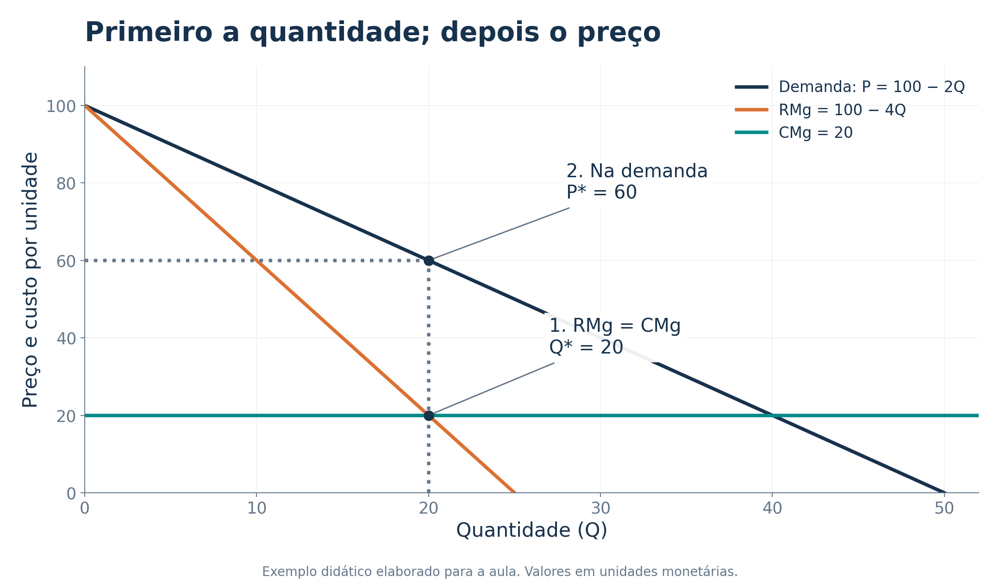
O lucro é \(\pi=RT-CT\). A decisão deve comparar receita marginal e custo marginal:
Depois de encontrar a quantidade, a firma consulta a curva de demanda para encontrar o preço que permite vender essa quantidade.
\[ \boxed{RMg(Q^*)=CMg(Q^*)}\qquad\boxed{P^*=P(Q^*)} \]
A igualdade marginal precisa corresponder a um máximo: no caso usual, a receita marginal passa de superior para inferior ao custo marginal. Também é necessário comparar o resultado com não produzir quando essa alternativa estiver disponível.
🔑 Na concorrência, \(P=RMg=CMg\). No monopólio de preço uniforme, normalmente \(P>RMg=CMg\).
Suponha:
\[ P=100-2Q,\qquad CT=100+20Q. \]
1. Calcular a receita total e as marginais:
\[ RT=(100-2Q)Q=100Q-2Q^2,\qquad RMg=100-4Q,\qquad CMg=20. \]
2. Encontrar a quantidade que maximiza o lucro:
\[ 100-4Q=20\quad\Rightarrow\quad Q^*=20. \]
3. Encontrar o preço na demanda:
\[ P^*=100-2(20)=60. \]
4. Calcular o resultado:
\[ RT=60(20)=1.200,\quad CT=100+20(20)=500, \quad\boxed{\pi=700}. \]
Se a firma produzisse 25 unidades, a receita seria máxima, mas o lucro cairia para \(1.250-600=650\). As unidades adicionais não compensam seus custos.
Exemplo autoral; valores em unidades monetárias.
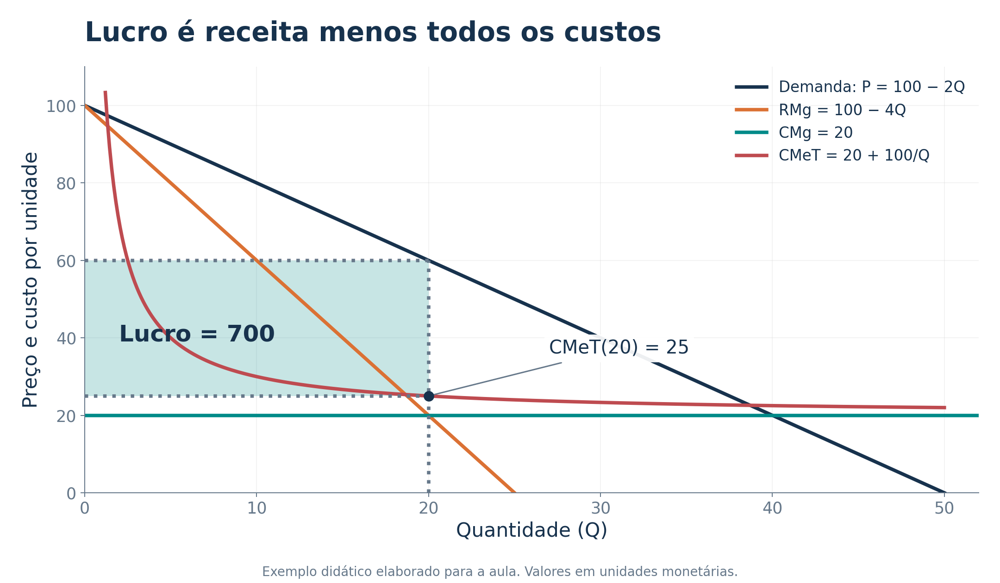
O lucro pode ser representado por um retângulo:
\[ \pi=(P-CMeT)Q=(60-25)20=700. \]
A altura mede o lucro por unidade; a base mede a quantidade vendida.
Poder de mercado não garante lucro positivo. Um preço acima do custo marginal pode ser insuficiente para cobrir o custo médio total.
Por exemplo, mantendo demanda e custo marginal, mas aumentando o custo fixo para 900, a quantidade ótima continua sendo 20 e o preço continua sendo 60. Agora, \(CT=1.300\) e o lucro é \(-100\).
No curto prazo, um custo fixo inevitável não altera a decisão marginal. No longo prazo, a firma precisa avaliar se a receita cobre todos os custos econômicos de permanecer no mercado.
🔑 Barreiras à entrada podem preservar lucros econômicos positivos, mas não asseguram que toda firma monopolista seja lucrativa.
Na concorrência, a firma toma o preço como dado e usa seu custo marginal para decidir quanto produzir. Sob as condições estudadas na aula anterior, isso permite construir uma curva de oferta.
No monopólio, a quantidade depende simultaneamente dos custos e da demanda, por meio da receita marginal.
Não existe uma relação de oferta independente da demanda que associe cada preço a uma única quantidade oferecida pelo monopolista.
Considere o mesmo custo marginal de 20 em dois mercados hipotéticos:
| Demanda | Receita marginal | Quantidade ótima | Preço ótimo |
|---|---|---|---|
| \(P=100-2Q\) | \(RMg=100-4Q\) | 20 | 60 |
| \(P=100-Q\) | \(RMg=100-2Q\) | 40 | 60 |
O mesmo preço aparece associado a quantidades diferentes, porque a demanda mudou. Não é possível descrever a decisão usando apenas preço e custos.
🔑 A curva de custo marginal do monopolista não é sua curva de oferta.
O estudo de caso do capítulo usa medicamentos para comparar exclusividade e concorrência após a entrada de produtores de genéricos.
Durante a proteção, a empresa pode restringir a quantidade e cobrar acima do custo marginal. Quando concorrentes entram, a oferta tende a aumentar e o preço tende a cair.
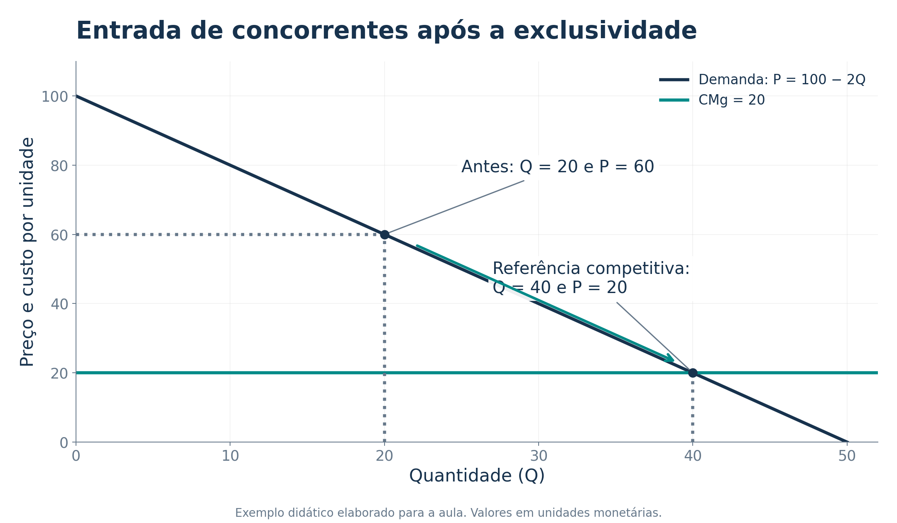
O gráfico mostra uma referência teórica simplificada, com custo marginal constante. Não representa preços observados de um medicamento específico.
O livro observa que consumidores podem continuar preferindo uma marca conhecida. Essa preferência pode sustentar diferenças de preço mesmo após a entrada de alternativas.
🔑 A existência de uma patente não elimina todas as alternativas terapêuticas, e seu término não transforma automaticamente todo mercado em concorrência perfeita. O exemplo ajuda a isolar o efeito econômico da entrada.
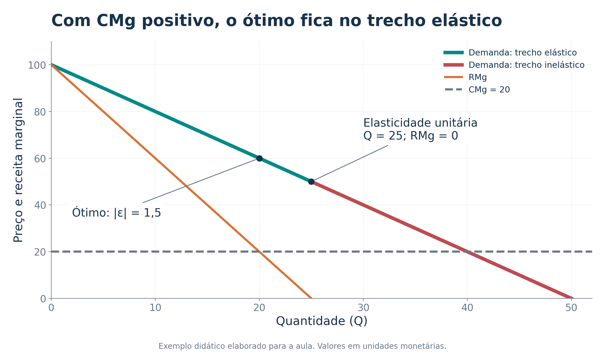
Se a demanda é inelástica, uma redução da quantidade eleva a receita total. Com custo marginal positivo, também reduz o custo. Portanto, o monopolista de preço uniforme não maximiza o lucro nesse trecho.
Aprofundamento para concursos: usando \(|\varepsilon|\) para o valor absoluto da elasticidade-preço da demanda:
\[ RMg=P\left(1-\frac{1}{|\varepsilon|}\right). \]
No ótimo interior:
\[ \frac{P-CMg}{P}=\frac{1}{|\varepsilon|},\qquad P=\frac{CMg}{1-1/|\varepsilon|}. \]
Quanto mais elástica a demanda, menor a margem proporcional de preço sobre o custo marginal. Se \(|\varepsilon|=1{,}5\), temos \(P=3CMg\).
Condições: preço uniforme, demanda diferenciável e ótimo interior. Com \(CMg>0\), o ótimo requer \(|\varepsilon|>1\). Se \(CMg=0\), pode ocorrer \(|\varepsilon|=1\).
A demanda é \(P=80-Q\) e o custo total é \(CT=100+20Q\).
a) Qual é a receita marginal?
b) Quais são a quantidade e o preço que maximizam o lucro?
c) Qual é o lucro? O que aconteceria se você confundisse a regra do monopolista com \(P=CMg\)?
\[ RT=80Q-Q^2\quad\Rightarrow\quad RMg=80-2Q. \]
\[ 80-2Q=20\quad\Rightarrow\quad Q^*=30,\qquad P^*=50. \]
\[ \pi=50(30)-[100+20(30)]=800. \]
Aplicar \(P=CMg\) levaria a \(Q=60\) e \(P=20\), com prejuízo de 100. Essa quantidade será relevante para discutir eficiência, mas não maximiza o lucro privado nesse exemplo.
Atividade autoral para discussão em sala.
Para avaliar eficiência, comparamos o benefício de uma unidade adicional com o custo de produzi-la.
A curva de demanda representa a disposição marginal a pagar dos consumidores. O custo marginal representa os recursos necessários para produzir a unidade adicional, na ausência de externalidades.
Assim, a quantidade eficiente satisfaz:
\[ \boxed{P(Q_e)=CMg(Q_e)}. \]
No exemplo \(P=100-2Q\) e \(CMg=20\):
\[ 100-2Q_e=20\quad\Rightarrow\quad Q_e=40. \]
O monopolista produz apenas \(Q_m=20\). Entre 20 e 40 existem consumidores dispostos a pagar mais que o custo de produção, mas essas trocas não ocorrem com o preço uniforme escolhido pela firma.
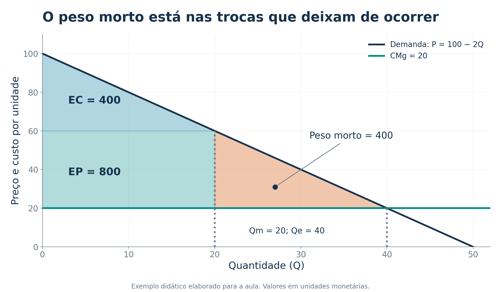
O peso morto é a perda de excedente total decorrente das transações socialmente vantajosas que deixam de acontecer.
No gráfico, a demanda é linear e o custo marginal é constante:
\[ \text{Peso morto}=\frac{(Q_e-Q_m)(P_m-CMg)}{2} =\frac{(40-20)(60-20)}{2}=400. \]
| Medida | Monopólio com preço uniforme | Referência eficiente |
|---|---|---|
| Excedente do consumidor | 400 | 1.600 |
| Excedente do produtor | 800 | 0 |
| Excedente total | 1.200 | 1.600 |
Aqui, os excedentes são calculados antes de descontar eventual custo fixo, mantido igual nas comparações. O excedente do produtor corresponde à receita menos o custo variável; lucro também desconta o custo fixo.
🔑 A perda decorre da quantidade reduzida. O ganho do produtor não compensa integralmente a perda dos consumidores.
Não devemos confundir transferência de excedente com destruição de excedente.
Parte do que os consumidores perdem com o preço mais alto é apropriada pelo produtor. Essa transferência muda a distribuição dos benefícios, mas não é, por si só, peso morto.
O peso morto corresponde aos ganhos das trocas que não foram realizadas. Esses ganhos não foram recebidos por ninguém.
| Fenômeno | Consequência principal |
|---|---|
| Preço maior nas unidades que continuam sendo vendidas | Transferência entre consumidores e produtor |
| Unidades eficientes que deixam de ser produzidas | Perda de excedente total |
| Recursos gastos apenas para preservar privilégios | Possível custo social adicional |
O capítulo também destaca a busca de renda econômica: firmas podem gastar recursos para obter ou proteger seu poder de monopólio. Esses recursos têm usos alternativos e podem ampliar o custo social.
Comparação com um imposto: ambos podem criar uma diferença entre a disposição a pagar e o custo marginal. No imposto, parte da receita vai para o governo; no monopólio, parte do excedente vai para a firma.
📚 O capítulo apresenta uma editora que paga 2 milhões pelos direitos de um livro. Para simplificar, o custo marginal de cada exemplar é zero.
Há dois grupos de leitores:
Mantendo os números da parábola em unidades monetárias:
| Estratégia | Quantidade | Receita total | Lucro após o custo fixo |
|---|---|---|---|
| Preço único de 30 | 100 mil | 3 milhões | 1 milhão |
| Preço único de 5 | 500 mil | 2,5 milhões | 0,5 milhão |
| Preço 30 para fãs e 5 para ocasionais | 500 mil | 5 milhões | 3 milhões |
Com preço uniforme, a editora prefere cobrar 30 e atender apenas os fãs. Os leitores ocasionais ficam sem o livro, embora seu valor para eles seja superior ao custo marginal de fornecê-lo.
Se conseguir separar os grupos e impedir a revenda, a editora pode cobrar preços diferentes. Nesse exemplo, a discriminação aumenta o lucro e elimina a perda causada pela exclusão dos leitores ocasionais.
Discriminação de preços ocorre quando a firma cobra preços diferentes pelo mesmo bem, sem que essas diferenças sejam explicadas apenas por diferenças nos custos de fornecimento.
Três condições ajudam a entender sua viabilidade:
Na parábola, a editora precisa distinguir os fãs dos leitores ocasionais. Se qualquer pessoa puder comprar por 5 e revender aos fãs por menos de 30, o preço mais alto perde sustentação.
Motivação da firma: aumentar o lucro. Possível efeito social: ampliar o acesso e a produção. Um efeito não garante automaticamente o outro.
🔑 Um desconto que apenas acompanha menor custo de atendimento não constitui, por si só, evidência de discriminação de preços.
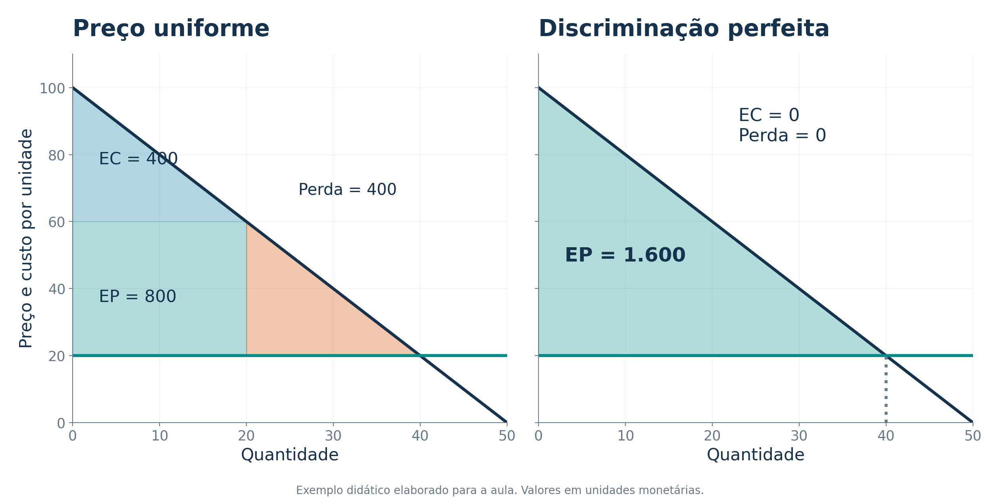
Na discriminação perfeita, a firma conhece a disposição a pagar por cada unidade e consegue cobrar exatamente esse valor.
Assim, não precisa reduzir o preço das unidades anteriores para vender uma unidade adicional. Ela atende todas as unidades cuja disposição a pagar é pelo menos igual ao custo marginal.
No modelo:
\[ Q=Q_e,\qquad EC=0,\qquad \text{peso morto}=0. \]
O produtor captura todo o excedente das trocas. Os custos fixos, se houver, ainda precisam ser descontados para calcular o lucro.
🔑 Eficiência e distribuição são perguntas diferentes. A quantidade pode ser eficiente e, ao mesmo tempo, todo o ganho das trocas ficar com o vendedor. Esse resultado não significa que os consumidores estejam melhor que sob um preço uniforme.
Na prática, a firma raramente conhece exatamente quanto cada consumidor pagaria por cada unidade.
O capítulo destaca que, com discriminação imperfeita, o efeito sobre o bem-estar pode ser positivo, negativo ou nulo. Depende de como preços, quantidades e distribuição das vendas mudam.
Classificação complementar para concursos:
| Grau | Como o preço varia | Exemplo conceitual |
|---|---|---|
| Primeiro | Conforme a disposição a pagar por cada unidade de cada comprador | Caso ideal de discriminação perfeita |
| Segundo | Conforme a quantidade ou a opção escolhida pelo consumidor | Descontos por quantidade e menus de planos |
| Terceiro | Conforme grupos identificáveis de consumidores | Tarifas distintas por categoria de usuário |
No segundo grau, o consumidor se autosseleciona. No terceiro, a firma identifica grupos e pode cobrar mais do grupo com demanda menos elástica, sob as condições usuais de custos e separação dos mercados.
🔑 Preço unitário que depende da quantidade adquirida é um caso típico de segundo grau, não de terceiro grau.
O livro apresenta mecanismos que ajudam a separar consumidores com diferentes disposições a pagar:
| Exemplo | Mecanismo econômico |
|---|---|
| Ingressos de cinema por categoria de público | Separar grupos com diferentes sensibilidades ao preço |
| Passagens com condições diferentes de compra e uso | Distinguir consumidores que valorizam flexibilidade e tempo |
| Cupons de desconto | Atrair quem aceita gastar tempo para economizar |
| Ajuda financeira em universidades | Alterar o preço líquido pago por diferentes estudantes |
| Descontos por quantidade | Cobrar preços unitários diferentes conforme o volume comprado |
✈️ No exemplo estilizado de passagens, passageiros de negócios tendem a valorizar flexibilidade; turistas podem aceitar restrições em troca de descontos. As regras concretas variam entre empresas e períodos.
🎟️ Cupons podem separar consumidores sem perguntar diretamente quanto estão dispostos a pagar.
Cuidado na análise: diferenças de qualidade, horário, risco, flexibilidade ou custo também podem explicar preços distintos. É necessário separar esses fatores do mecanismo de discriminação.
O texto jornalístico reproduzido no capítulo discute o ensino superior nos Estados Unidos e a diferença entre o preço anunciado e o preço líquido após bolsas e ajuda financeira.
\[ \text{Preço líquido}=\text{mensalidade anunciada}-\text{ajuda financeira}. \]
Dois estudantes de uma mesma instituição podem enfrentar preços líquidos diferentes. A análise econômica investiga como renda, disposição a pagar, objetivos institucionais e regras de auxílio afetam essa diferença.
Isso tem duas implicações:
O caso do livro é histórico e ilustra o mecanismo. Não descreve os valores ou as tendências atuais das mensalidades.
🔑 A discriminação pode permitir atender alguns consumidores a preços mais baixos, enquanto cobra mais de outros. Para avaliar seu efeito, precisamos observar quem passa a ser atendido e quem paga mais.
Mankiw organiza as respostas ao problema do monopólio em quatro grupos:
| Resposta | Objetivo | Dificuldade central |
|---|---|---|
| Promover concorrência | Reduzir barreiras e condutas anticompetitivas | Distinguir poder de mercado de ganhos reais de eficiência |
| Regular a firma | Limitar preços e orientar o serviço | Financiar custos fixos e preservar incentivos |
| Produção pública | Colocar a operação sob propriedade estatal | Criar incentivos, controle de custos e prestação de contas |
| Não intervir | Evitar uma intervenção mais custosa que o problema | Conviver com a perda de eficiência existente |
Nenhuma alternativa elimina automaticamente todos os custos econômicos. A escolha exige comparar o problema de mercado com os efeitos prováveis da intervenção.
Perguntas para avaliar uma proposta: a produção aumenta? O custo cai? Quem financia o serviço? Quem recebe os ganhos? Como a firma reage no futuro?
Políticas de defesa da concorrência podem combater acordos que restringem a competição, analisar fusões e enfrentar práticas que excluem rivais.
O capítulo menciona, como marcos históricos dos Estados Unidos, o Sherman Act, de 1890, e o Clayton Act, de 1914.
Uma fusão pode produzir efeitos opostos:
Esses ganhos de eficiência são frequentemente chamados de sinergias. O desafio é avaliar se são reais, relevantes e suficientes para compensar os efeitos sobre a concorrência.
O debate sobre fusões de companhias aéreas, citado no capítulo, ilustra por que economistas podem divergir: o resultado depende dos mercados afetados, das alternativas disponíveis e das economias de custo.
🔑 Mais empresas não significa automaticamente menor custo total, sobretudo quando a atividade apresenta características de monopólio natural.
Uma proposta é obrigar o monopolista natural a cobrar \(P=CMg\), de modo que a disposição marginal a pagar coincida com o custo marginal.
O problema é que, com custo médio decrescente, o custo marginal pode ficar abaixo do custo médio total. O preço eficiente não cobre todos os custos.
Use agora um novo exemplo didático:
\[ P=100-Q,\qquad CT=1.200+20Q. \]
Com preço regulado em 20:
\[ Q_e=80,\quad RT=20(80)=1.600,\quad CT=1.200+20(80)=2.800. \]
\[ \boxed{\pi=-1.200}. \]
A produção é eficiente na margem, mas falta financiar o custo fixo. Uma possibilidade é subsidiar a firma. O subsídio exige recursos públicos, e os impostos usados para arrecadá-los podem gerar outros custos.
🔑 Definir o preço eficiente não resolve, sozinho, o financiamento da rede.
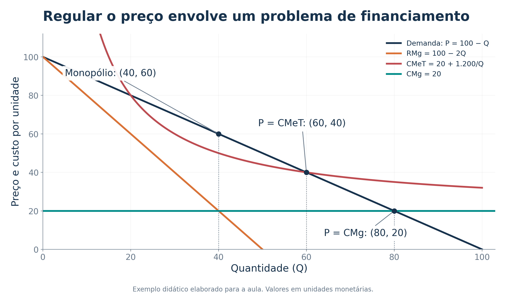
Outra alternativa é permitir um preço que cubra o custo médio total. No exemplo, \(Q=60\) e \(P=40\) satisfazem a demanda e \(P=CMeT\):
\[ CMeT(60)=\frac{1.200}{60}+20=40. \]
Essa combinação permite lucro econômico zero, incluindo a remuneração normal dos recursos já contabilizada nos custos.
| Regra | Quantidade | Preço | Lucro |
|---|---|---|---|
| Maximização privada: \(RMg=CMg\) | 40 | 60 | 400 |
| Preço igual ao custo médio | 60 | 40 | 0 |
| Preço igual ao custo marginal | 80 | 20 | -1.200 |
A regulação pelo custo médio amplia a produção em relação ao monopólio, mas ainda deixa \(P>CMg\). Portanto, permanece algum peso morto.
Neste exemplo, a demanda e o custo médio também se cruzam em \(Q=20\) e \(P=80\). A tabela usa a interseção de maior produção e menor preço, compatível com cobrir os custos e ampliar o atendimento.
🔑 A escolha envolve um compromisso entre eficiência na margem, sustentabilidade financeira e necessidade de financiamento externo.
Regular uma firma exige pensar em como ela reage às regras.
Se toda redução de custo for imediatamente acompanhada de redução igual na receita permitida, a empresa pode ter pouco incentivo para investir esforço e recursos na busca de eficiência.
Se puder conservar temporariamente parte dos ganhos, esse incentivo pode ser maior. O desenho da regra precisa equilibrar o benefício dos consumidores com o estímulo à redução de custos.
| Questão do regulador | Por que importa? |
|---|---|
| Quais custos são necessários para prestar o serviço? | Custos informados pela firma podem ser difíceis de verificar |
| Como remunerar melhorias de eficiência? | A firma responde aos incentivos da regra |
| Como preservar qualidade e manutenção? | Cortes de gastos podem reduzir a qualidade |
| Como repartir os ganhos com os usuários? | O resultado afeta preços e distribuição do excedente |
🔑 Regulação de preços envolve informação, financiamento e incentivos, além de escolher um ponto em um gráfico.
O governo pode operar diretamente uma atividade de monopólio natural, em vez de apenas regular uma empresa privada.
A propriedade pública permite incorporar objetivos como universalização, continuidade e acesso. Ainda assim, custos, recursos e incentivos continuam importando.
O capítulo enfatiza que proprietários privados têm interesse em reduzir custos porque podem se apropriar do ganho. Na empresa pública, esse incentivo depende das regras de gestão, avaliação e controle.
Também existe o risco de decisões influenciadas por objetivos políticos ou de prejuízos persistentemente cobertos pelo orçamento público.
Como avaliar? Compare custos, qualidade, cobertura, investimentos, transparência e responsabilização dos gestores.
🔑 A discussão de Mankiw destaca os incentivos de cada arranjo. Não permite concluir que toda empresa privada será eficiente ou que toda empresa pública será ineficiente.
Uma falha de mercado identifica um problema, mas não demonstra que qualquer intervenção produzirá um resultado melhor.
Uma política pode ter custos administrativos, exigir informações difíceis de obter, alterar incentivos ou criar novas distorções.
A decisão relevante compara:
\[ \text{Ganho esperado com a correção} \quad\text{e}\quad \text{custos e efeitos adversos da intervenção}. \]
Se a intervenção disponível causar mais perdas que ganhos, não intervir pode ser a melhor alternativa entre as opções concretas.
Isso não implica ignorar todo monopólio. Mercados diferentes podem exigir respostas diferentes, conforme o poder de mercado, a tecnologia e as capacidades das instituições.
🔑 O capítulo propõe comparar alternativas imperfeitas e seus efeitos.
a) A companhia de água tem custo médio acima do custo marginal. Se a tarifa for igual ao custo marginal, o serviço necessariamente se financia?
b) Uma editora passa a atender um grupo adicional com preço reduzido, sem alterar o preço dos compradores anteriores. Isso pode reduzir o peso morto?
c) Na discriminação perfeita, a produção é eficiente. Isso garante que o excedente do consumidor seja maior?
a) Não. A tarifa pode ser insuficiente para cobrir o custo fixo. É preciso definir como financiar a diferença.
b) Sim. Se a disposição a pagar dos novos compradores excede o custo marginal, as vendas adicionais criam excedente.
c) Não. No modelo de discriminação perfeita, o produtor captura todo o excedente, e o excedente do consumidor é zero.
Atividade autoral para discussão em sala.
O monopólio surge quando barreiras à entrada permitem que uma firma atenda o mercado sem concorrentes próximos.
| Aspecto | Firma competitiva | Monopolista com preço uniforme |
|---|---|---|
| Relação com o preço | Toma o preço como dado | Escolhe um ponto da demanda |
| Receita marginal | \(RMg=P\) | \(RMg<P\) com demanda decrescente |
| Escolha interior de produção | \(RMg=CMg\) | \(RMg=CMg\) |
| Preço e custo marginal | \(P=CMg\) | Normalmente \(P>CMg\) |
| Lucro econômico no longo prazo | Entrada tende a eliminar lucros positivos | Barreiras podem preservar lucros positivos |
| Eficiência no modelo básico | Quantidade eficiente | Quantidade menor que a eficiente |
A discriminação de preços pode alterar produção, lucro e distribuição. No caso perfeito, elimina o peso morto, mas concentra o excedente no produtor. Nos casos imperfeitos, o resultado depende das circunstâncias.
Políticas públicas podem promover concorrência, regular, operar a atividade ou aceitar o resultado existente. Cada alternativa tem custos e incentivos.
O poder de mercado é uma questão de grau. Monopólios puros são casos especiais, mas muitas empresas vendem produtos com substitutos imperfeitos. O modelo ajuda a analisar esse poder e suas consequências.
🔑 Para cada caso, pergunte: qual é a barreira, como se escolhem preço e quantidade, quais trocas deixam de ocorrer e quem recebe os ganhos?
São 12 questões: seis de múltipla escolha e seis de certo ou errado. Nos itens do Cebraspe, C = certo/verdadeiro e E = errado/falso.
Os enunciados e as alternativas abaixo são adaptações resumidas para uso didático de questões reais. Foram preservados o sentido econômico, a ordem das alternativas e o gabarito. Os links permitem consultar a redação integral e o gabarito definitivo das bancas.
As resoluções e os exemplos complementares são elaboração didática desta aula. Resolva os itens antes de avançar para o gabarito.
Ir ao gabarito · Ir às resoluções
Cebraspe | CAESB | Analista de Suporte ao Negócio, Economista | 2025 | questão original 39. Adaptação.
A demanda de um monopolista tem elasticidade-preço de módulo 1,5 no ponto relevante. Pela regra de maximização do lucro, qual é a relação entre o preço e o custo marginal?
Prova oficial · Gabarito definitivo
FGV | COMPESA | Analista de Gestão, Economista | 2016 | tipo 1 | questão original 38. Adaptação.
Qual afirmação descreve corretamente a escolha de produção de um monopolista que maximiza lucro?
Prova oficial · Gabarito definitivo retificado
FGV | ALEGO | Analista Legislativo, Economista | 2026 | tipo 1 | questão original 51. Adaptação.
Um monopolista maximiza lucro cobrando o mesmo preço por todas as unidades, sem discriminação. Julgue as proposições:
Prova oficial · Gabarito definitivo
FGV | TCE-TO | Auditor de Controle Externo, Ciências Econômicas | 2022 | tipo 1 | questão original 48. Adaptação.
Qual situação caracteriza discriminação de preços de terceiro grau?
Prova oficial · Gabarito definitivo
FGV | TCE-TO | Auditor de Controle Externo, Ciências Econômicas | 2022 | tipo 1 | questão original 59. Adaptação.
Na regulação de serviços públicos, reduzir a parcela do excedente econômico apropriada pelo produtor está diretamente relacionado a qual dimensão?
Prova oficial · Gabarito definitivo
FGV | Senado Federal | Consultor Legislativo, Assessoramento Legislativo, Economia Regional e Políticas de Desenvolvimento Urbano | 2022 | tipo 1 | questão original 62. Adaptação.
Julgue as afirmações sobre monopólio:
Prova oficial · Gabarito definitivo
Cebraspe | FUB | Economista | 2018 | item original 56. Adaptação.
No modelo usual, um monopolista que maximiza lucro atua no trecho elástico da demanda e apresenta markup, medido por \(P/CMg\), superior a 1.
( ) Certo / verdadeiro ( ) Errado / falso
Prova oficial · Gabarito definitivo
Cebraspe | FUB | Economista | 2018 | item original 57. Adaptação.
A empresa individual em concorrência perfeita enfrenta uma curva de demanda decrescente.
( ) Certo / verdadeiro ( ) Errado / falso
Prova oficial · Gabarito definitivo
Cebraspe | FUB | Economista | 2018 | item original 58. Adaptação.
Quando o preço por unidade varia com a quantidade escolhida pelo comprador, a cobrança não linear caracteriza discriminação de terceiro grau.
( ) Certo / verdadeiro ( ) Errado / falso
Prova oficial · Gabarito definitivo
Cebraspe | Funpresp-EXE | Analista de Previdência Complementar, área 5, Gestão de Investimentos e Riscos de Investimentos | 2025 | item original 59. Adaptação.
No monopólio, encontra-se o preço na curva de demanda, usando a quantidade definida pela igualdade entre receita marginal e custo marginal.
( ) Certo / verdadeiro ( ) Errado / falso
Prova oficial · Gabarito definitivo
Cebraspe | FUB | Economista | 2018 | item original 78. Adaptação.
Ao regular a economia, o Estado protege a concorrência, mas não interfere nos preços ou nas tarifas dos bens e serviços públicos.
( ) Certo / verdadeiro ( ) Errado / falso
Prova oficial · Gabarito definitivo
Cebraspe | Ministério do Planejamento e Orçamento | Analista de Planejamento e Orçamento, especialidade Geral | 2024 | item original 78. Adaptação.
Um imposto por unidade recolhido pelo monopolista não amplia o peso morto, pois a firma absorve integralmente a perda de bem-estar dos consumidores.
( ) Certo / verdadeiro ( ) Errado / falso
Prova oficial · Gabarito definitivo
| Questão | Resposta | Questão | Resposta |
|---|---|---|---|
| 1 | E | 7 | Certo |
| 2 | D | 8 | Errado |
| 3 | E | 9 | Errado |
| 4 | C | 10 | Certo |
| 5 | B | 11 | Errado |
| 6 | C | 12 | Errado |
As letras das questões 1 a 6 indicam alternativas. Nos itens 7 a 12, as palavras indicam o julgamento do enunciado.
Pela condição de ótimo, usando a elasticidade em módulo:
\[ P\left(1-\frac{1}{1{,}5}\right)=CMg \quad\Rightarrow\quad \frac{P}{3}=CMg \quad\Rightarrow\quad \boxed{P=3CMg}. \]
As demais alternativas não satisfazem essa relação. Não se deve confundir \(P/CMg=3\) com a margem proporcional \((P-CMg)/P=2/3\).
Exemplo complementar: se o custo marginal for 20, o preço será 60.
A expressão correta é:
\[ CMg=RMg=P\left(1-\frac{1}{|\varepsilon|}\right). \]
A confunde o resultado competitivo com o monopolista de preço uniforme. B ignora o efeito da redução de preço nas demais unidades. C contradiz a escolha no trecho elástico, quando o custo marginal é positivo. E compara inclinações, em vez de igualar os níveis de receita marginal e custo marginal.
I. A variação marginal do lucro é \(RMg-CMg\). Ela é zero em um ótimo interior, observadas as condições para um máximo.
II. O índice \((P-CMg)/P=1/|\varepsilon|\) relaciona a margem à elasticidade. Consumidores mais sensíveis ao preço limitam a margem que a firma consegue cobrar.
III. No modelo usual, a firma escolhe \(Q_m<Q_e\). As unidades não produzidas entre essas quantidades tinham benefício marginal superior ao custo marginal, originando peso morto.
No terceiro grau, o vendedor distingue grupos e estabelece preços diferentes para eles, limitando a arbitragem entre os mercados.
A e D descrevem a lógica do primeiro grau, associada à extração individual do excedente. B remete à autosseleção típica do segundo grau. E descreve uma tarifa em duas partes, mecanismo que não define, por si só, a discriminação por grupos do terceiro grau.
O enunciado enfatiza quem se apropria dos benefícios econômicos, por isso o gabarito é eficiência distributiva, na terminologia adotada pela banca.
A eficiência alocativa trata da quantidade e da destinação dos recursos, como produzir até o ponto em que benefício marginal e custo marginal se igualam. A eficiência produtiva trata de produzir com menor uso de recursos.
Uma política pode melhorar mais de uma dimensão, mas reduzir a parcela apropriada pelo produtor não prova, isoladamente, que o excedente total aumentou.
I é falsa. Comparar apenas \(c'(0)\) e \(p(0)\) não fornece uma regra universal de produção positiva. Para uma equivalência geral, são necessárias hipóteses adicionais sobre a tecnologia e o formato do problema de maximização.
Contraexemplo complementar, elaborado para a aula: suponha \(P=10-Q\). O custo marginal é 12 até \(Q=1\) e passa a ser 1 para as unidades posteriores. Então \(c'(0)=12>p(0)=10\), mas produzir 4 unidades gera receita de 24, custo de 15 e lucro de 9. A produção positiva pode ser vantajosa mesmo sem a desigualdade proposta. As economias de escala mudam a comparação.
II é falsa. No trecho inelástico, reduzir a quantidade aumenta a receita e, com custo marginal positivo, reduz o custo. Logo, aquele ponto não maximiza o lucro do monopolista de preço uniforme.
III é verdadeira. Pela regra da elasticidade, a margem relativa diminui quando \(|\varepsilon|\) aumenta. No limite de demanda perfeitamente elástica, a margem sobre o custo marginal tende a zero.
No modelo de preço uniforme com \(CMg>0\), o ótimo está no trecho elástico, e \(P>CMg\). Portanto, o markup medido como razão \(P/CMg\) é superior a 1.
A hipótese sobre o custo marginal importa: se \(CMg=0\), pode haver ótimo no ponto de elasticidade unitária, e a razão \(P/CMg\) não está definida. Essa ressalva não altera o gabarito oficial do item no modelo usual.
O erro é atribuir inclinação negativa à demanda da firma individual em concorrência perfeita. Ela toma o preço do mercado como dado e enfrenta demanda perfeitamente elástica nesse preço.
A demanda do mercado pode ser decrescente. O monopolista enfrenta essa demanda de mercado porque é o único ofertante.
Uma tabela de preços em que o valor unitário depende da quantidade comprada é exemplo de cobrança não linear, associada à discriminação de segundo grau.
No terceiro grau, a separação ocorre entre grupos identificáveis de consumidores. O erro do item está na classificação, não na descrição da dependência do preço em relação à quantidade.
A igualdade \(RMg=CMg\) determina a quantidade ótima. Essa quantidade deve ser levada à curva de demanda para encontrar o preço.
Exemplo complementar da aula:
\[ 100-4Q=20\Rightarrow Q=20, \qquad P=100-2(20)=60. \]
O valor 20 encontrado para a receita marginal não é o preço final. Nesse ponto, \(RMg=CMg=20\), enquanto \(P=60\).
A afirmação exclui indevidamente a intervenção em preços e tarifas. A regulação de monopólios naturais pode justamente estabelecer regras de cobrança, remuneração e atendimento.
O capítulo discute duas referências: preço igual ao custo marginal e preço igual ao custo médio. A primeira pode exigir financiamento do custo fixo; a segunda pode manter alguma perda de eficiência.
Um imposto específico de valor \(t\) por unidade eleva o custo marginal privado relevante para a decisão:
\[ RMg=CMg+t. \]
No modelo usual, isso reduz a quantidade e aumenta a distância em relação ao nível eficiente. O fato de a firma recolher o imposto não determina quem suporta seu custo econômico.
Exemplo complementar, não fornecido pela banca: mantenha \(P=100-2Q\), \(CMg=20\) e estabeleça \(t=20\).
\[ 100-4Q=40\Rightarrow Q=15,\qquad P=70. \]
Sem imposto, \(Q=20\), \(P=60\) e o peso morto era 400. Com imposto, considerando a arrecadação como transferência e mantendo o custo real marginal em 20:
\[ \text{Peso morto}=\frac{(40-15)(70-20)}{2}=625. \]
A perda adicional é \(625-400=225\). A arrecadação, de \(20\times15=300\), deve ser incluída no excedente total, mas não elimina a perda das trocas que deixaram de ocorrer.